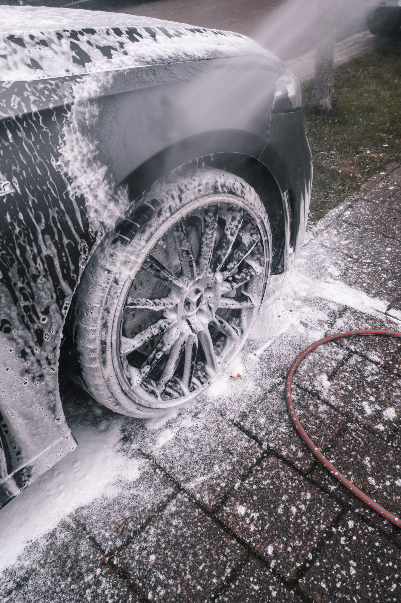

Inside + outside
01 / Full vehicle
Full detail
A combined interior refresh and exterior detail, shaped around the condition of your vehicle.
Discuss your vehicleMobile auto detailing Katy, Texas
Prairie Gloss brings detail-focused interior and exterior care to your vehicle, out where the sky runs wide. Call or book online to plan a mobile detail in Katy.
Call or book online · Vehicle needs confirmed before the visit
A useful detail should be easy to inspect in daylight: cleaner glass, refreshed surfaces, tidier seams, and a finish that still looks right once you're back under an open Katy sky. We focus the conversation on what your vehicle actually needs.
Choose the scope
Call first. We’ll discuss the vehicle, its condition, and the kind of refresh you have in mind.
01 / Full vehicle
A combined interior refresh and exterior detail, shaped around the condition of your vehicle.
Discuss your vehicle02 / Cabin focus
Detail-focused cleaning for the visible surfaces, glass, mats, seams, and everyday touchpoints inside.
Call about the interior
Exterior focus03 / Finish focus
A careful wash and finish-minded exterior detail for a cleaner, more consistent look.
Call about the exteriorLicensed launch imagery shown for service context; photos are not presented as customer vehicles.
Pricing
Pick the level of care your vehicle needs. Add the exterior wash to either detail.
$200
Interior essentials, handled properly.
$250
The full interior restoration, with shampoo.
+$50
Add-on to either detail above.
Tell us what you drive and what you want cleaned or refreshed.
We’ll talk through the service and confirm whether your Katy location works.
Once the details are clear, we’ll arrange the next step by phone.
Walk around the vehicle and look over the areas that received attention.
Observable workmanship
Detailing lives in the places a quick wash skips. These are the kinds of areas worth checking when the work is done.
Before you call
Yes. Prairie Gloss provides mobile auto detailing in Katy, Texas. Call or book online to confirm your location and vehicle needs.
You can call about a full inside-and-out detail, an interior-focused reset, or an exterior refresh.
Timing depends on the vehicle, its condition, and the service scope. We’ll discuss those details on the call.
Call 956-300-4705 and describe your vehicle and the areas you want refreshed, or book a time online.
Katy, your vehicle is ready for a reset.
Local mobile vehicle care
Prairie Gloss Mobile Car Detailing Katy provides appointment-based interior and exterior vehicle detailing in Katy. Mobile detailing brings the scheduled cleaning visit to an agreed driveway, workplace, or suitable parking location, so the vehicle can receive focused care without a traditional wash-line visit. Before the appointment, share the vehicle type, its condition, the areas needing attention, and the service location so the scope can be confirmed.
Cabin care can address vacuuming, mats, reachable surfaces, glass, touchpoints, and the visible buildup discussed before the visit.
Exterior care can include a hand wash, wheel and tire attention, careful drying, glass, door jambs, and finishing details.
A combined appointment brings interior and exterior work into one scheduled visit when the whole vehicle needs attention.
What should you mention before booking? Vehicle size and condition affect the work involved. Mention stains, heavy buildup, sensitive surfaces, access restrictions, or any area that needs particular attention. Exact availability and final scope should be confirmed directly before the appointment.